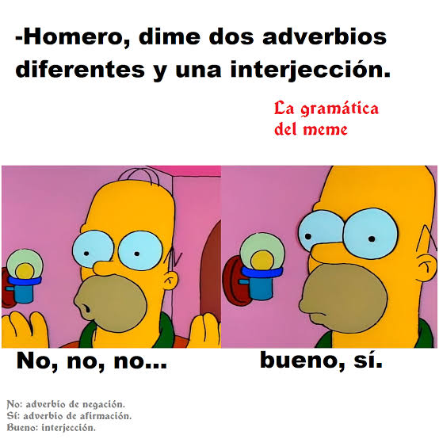

Conjunción
• Definición propia: Son los enlaces que usamos para amarrar oraciones o ideas completas, ayudándonos a sumar opciones, contrastar problemas o explicar razones.
• Banco de palabras: Y, pero, o, porque, aunque.
• Oración de aplicación: La plataforma es súper segura pero requiere mantenimiento constante.
